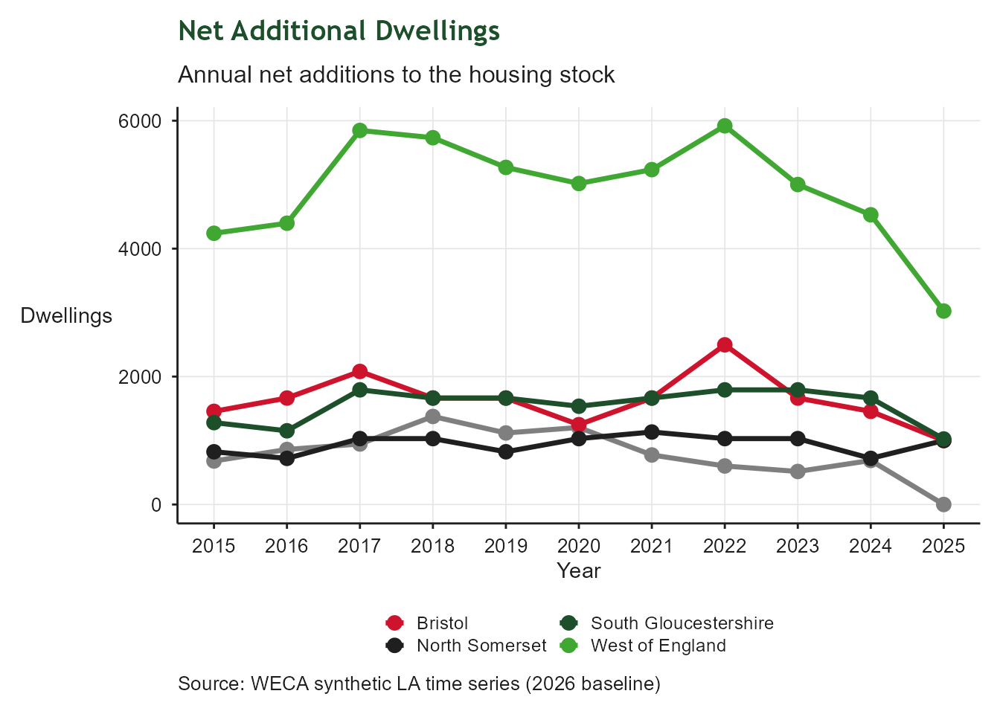
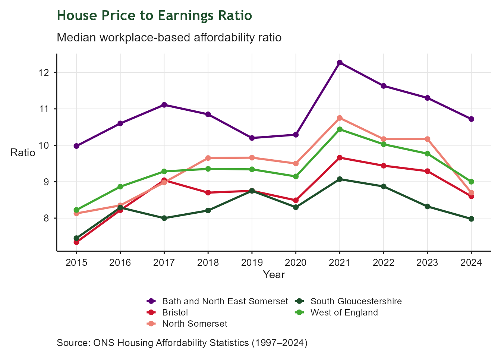
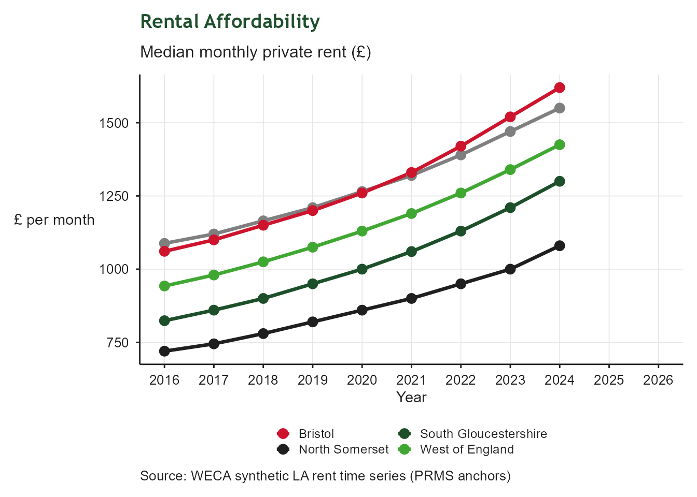
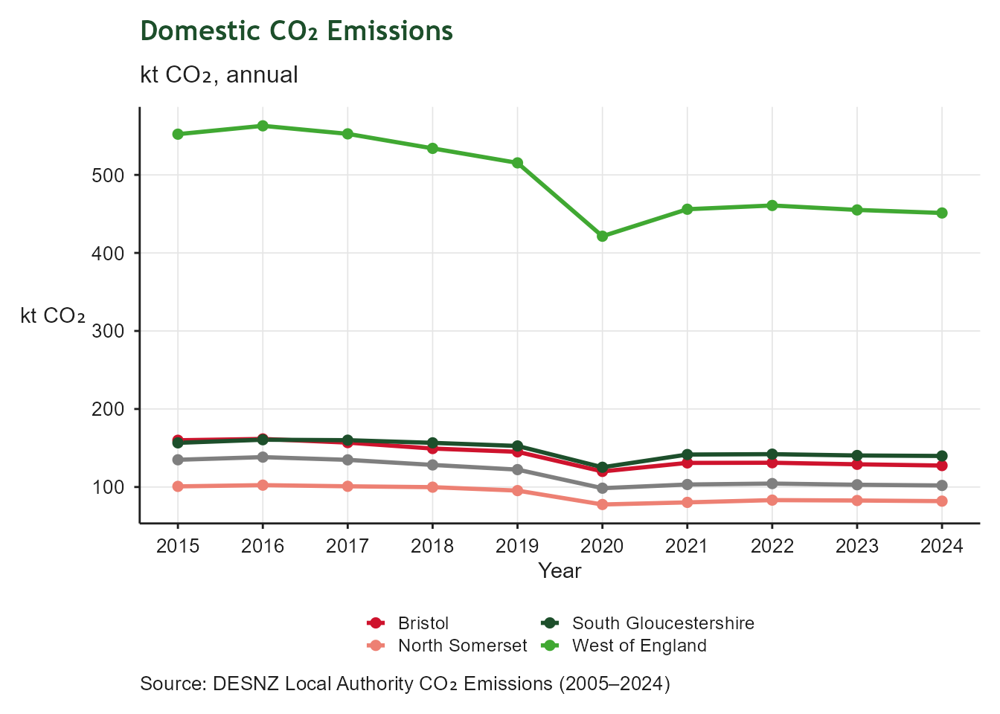

| Affordable and Sustainable Homes: Indicator Summary | ||||
| Indicator | From | To | Latest value | Units |
|---|---|---|---|---|
| Annual net increase in the number of dwellings | 2024-04-01 | 2025-03-31 | 3,024 | Number of dwellings |
| Proportion of non - decent homes | 2024-04-01 | 2025-03-31 | 13 | % |
| Proportion of homes with an Energy Performance Certificate rating C or above | 2026-06-01 | 2026-06-30 | 52 | % |
| House price to workplace-based earnings ratio | 2024-01-01 | 2024-12-31 | 9 | Ratio |
| Private monthly rental prices | 2023-07-01 | 2024-06-30 | 1,425 | £ |
| Number and rate in temporary accommodation | 2025-01-01 | 2025-12-31 | 168 | No. of households |
| Regional CO2 emissions from domestic sector | 2024-01-01 | 2024-12-31 | 451 | kilotonnes CO2e |
3 Affordable and Sustainable Homes
Building affordable and attractive homes in sustainable communities
3.1 Context
This chapter tracks indicators related to housing affordability and sustainability across the West of England. Indicators cover metrics like housing completions, affordability ratios, energy efficiency, social housing supply, and planning permissions. Indicators were developed to provide high-level insights into regional trends and performance in relation to the West of England’s housing priorities as outlined in our Growth Strategy.
3.2 Net Additional Dwellings
| Net Additional Dwellings | |
| Annual net increase in the number of dwellings | |
| Latest value | 3,024 Number of dwellings (2025-03-31) |
| Previous value | 4,529 Number of dwellings (2024-03-31) |
| Change vs previous | ↓ -33.2% |
| First value | 4,240 Number of dwellings (2015-03-31) |
| Change since first | ↓ -28.7% |
| Observations | 11 |
| Trend | |
| Last updated | 2026-08-03 |
Overview
This indicator reports the annual net increase in the number of dwellings across the West of England. It is based on DLUHC’s Net Additional Dwellings statistics (Live Table 122), which capture the total change in the housing stock each year. Net additions include new build completions, conversions, changes of use, and other gains, minus demolitions and other losses.
The indicator provides a consistent measure of housing delivery over time and helps assess whether the region is expanding its housing stock at a pace aligned with growth ambitions and local need. The WECA figure is calculated by summing net additions across the four unitary authorities.

3.3 Non-decent homes
| Non-decent Homes | |
| Proportion of dwellings failing the Decent Homes Standard | |
| Latest value | 13% (2025-03-31) |
| Previous value | 13% (2024-03-31) |
| Change vs previous | ↑ +0.0 ppt |
| First value | 20% (2010-03-31) |
| Change since first | ↓ -7.5 ppt |
| Observations | 16 |
| Trend | |
| Last updated | 2026-08-03 |
Overview
This indicator tracks the proportion of dwellings in each local authority area that do not meet the Decent Homes Standard. The series is derived from the EHS LA Stock Condition Modelling dataset and provides a time series from 2009/10 to 2024/25. The values represent the estimated share of homes that fall below the standard in each year. A lower percentage indicates better housing quality and a smaller proportion of non-decent homes.

3.4 Energy Performance of Homes
| Energy Performance of Homes | |
| Proportion of homes with EPC rating of C or above | |
| Latest value | 52% (2026-06-30) |
| Previous value | 52% (2026-05-31) |
| Change vs previous | ↑ +0.1 ppt |
| First value | 38% (2016-06-30) |
| Change since first | ↑ +14.6 ppt |
| Observations | 121 |
| Trend | |
| Last updated | 2026-08-03 |
Overview
This indicator tracks the proportion of homes in the West of England with an Energy Performance Certificate (EPC) rating of C or above. A higher proportion indicates better energy efficiency and sustainability in the housing stock. Only about 70% of homes have an EPC, so this indicator is based on the subset of homes with an EPC, which may not be fully representative of all homes in the region. This dataset is from MHCLG and is based on the recently revised scheme for EPC.

3.5 House Price to Earnings Ratio
| House Price to Earnings Ratio | |
| Ratio of median house price to median gross annual wage | |
| Latest value | 9 Ratio (2024-12-31) |
| Previous value | 10 Ratio (2023-12-31) |
| Change vs previous | ↓ -7.9% |
| First value | 8 Ratio (2015-12-31) |
| Change since first | ↑ +9.4% |
| Observations | 10 |
| Trend | |
| Last updated | 2026-08-03 |
Overview
This indicator tracks the ratio of median house prices to median gross annual workplace‑based earnings across the West of England. A higher ratio indicates that house prices are rising faster than local earnings, making homes less affordable for people working in the region. Because the measure uses workplace‑based earnings rather than residence‑based earnings, it reflects the affordability pressures faced by workers in each local authority.
The dataset is sourced from the ONS Housing Affordability Statistics, specifically the House price to workplace‑based earnings ratio (Table 5c). The ratio is calculated by dividing median house prices from Land Registry data by median full‑time earnings from the Annual Survey of Hours and Earnings (ASHE). While comprehensive, the dataset can be influenced by year‑to‑year volatility in earnings estimates, particularly in smaller labour markets.

3.6 Rental Affordability
| Rental Affordability | |
| Median monthly private rent (£) | |
| Latest value | 1,425 £ (2024-06-30) |
| Previous value | 1,340 £ (2023-06-30) |
| Change vs previous | ↑ +6.3% |
| First value | 942 £ (2016-06-30) |
| Change since first | ↑ +51.2% |
| Observations | 9 |
| Trend | |
| Last updated | 2026-08-03 |
Overview
This indicator reports median monthly private rents across the West of England. It provides a simple measure of rental costs faced by households in each local authority. Higher values indicate increased pressure on affordability, particularly for lower‑income renters and households without access to social housing.
The indicator draws on Valuation Office Agency (VOA) private rental market statistics. The WECA figure is calculated as a median across the four unitary authorities, providing a consistent regional view of rental market trends.

3.7 Temporary Accommodation (Q4 total households)
| Households in Temporary Accomodation | |
| Q4 | |
| Latest value | 168 No. of households (2025-12-31) |
| Previous value | 122 No. of households (2024-12-31) |
| Change vs previous | ↑ +38.1% |
| First value | 281 No. of households (2019-12-31) |
| Change since first | ↓ -40.0% |
| Observations | 7 |
| Trend | |
| Last updated | 2026-08-03 |
Overview
This indicator reports the total number of households in temporary accommodation across the West of England, based on the Q4 statutory homelessness return submitted by each local authority. Temporary accommodation includes placements such as bed and breakfast hotels, hostels, nightly‑paid accommodation, and private sector leasing arrangements. Because the measure uses the Q4 snapshot, it provides a consistent annual reference point for monitoring changes in demand for temporary accommodation over time.
The dataset is sourced from the DLUHC Statutory Homelessness Statistics. These tables report the number of households accommodated under homelessness duties at the end of each quarter. While comprehensive, the data can be influenced by short‑term operational pressures, changes in the availability of suitable accommodation, and fluctuations in the number of households presenting with acute housing need.

3.8 Domestic CO₂ Emissions
| Domestic CO₂ Emissions | |
| DESNZ | |
| Latest value | 451 kilotonnes CO2e (2024-12-31) |
| Previous value | 455 kilotonnes CO2e (2023-12-31) |
| Change vs previous | ↓ -0.9% |
| First value | 552 kilotonnes CO2e (2015-12-31) |
| Change since first | ↓ -18.3% |
| Observations | 10 |
| Trend | |
| Last updated | 2026-08-03 |
Overview
This indicator tracks domestic carbon dioxide (CO₂) emissions from homes in the West of England. Lower emissions indicate improved energy efficiency, reduced fossil‑fuel use, and progress towards decarbonising the residential sector. Domestic CO₂ reflects household energy consumption — primarily electricity and gas — and is influenced by insulation levels, heating systems, occupant behaviour, and the carbon intensity of the national electricity grid.
The dataset is sourced from the DESNZ Local Authority CO₂ Emissions Statistics These figures are reported on an end‑user basis, meaning emissions are allocated to the point of consumption rather than generation. While comprehensive, the dataset models some off‑grid fuels (such as heating oil) through the national greenhouse gas inventory, which may introduce uncertainty for rural areas with higher off‑grid usage.
